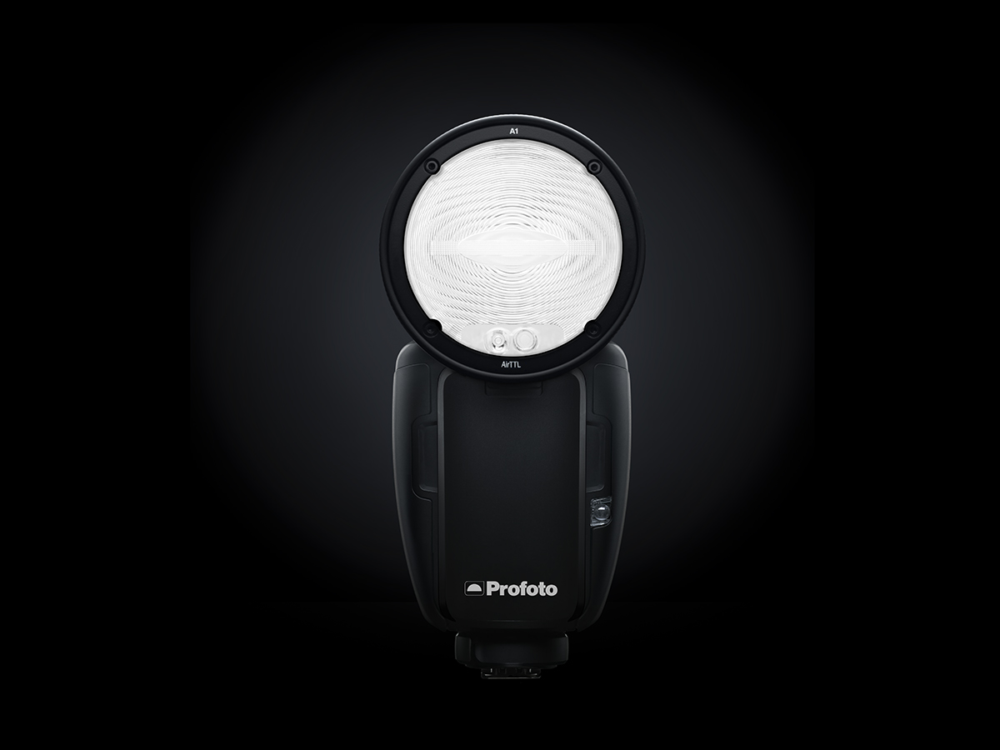

Forside
Guides
Gear
Inspiration
Kontakt
Seneste artikel
Tag dine billeder til næste step med Lightroom.
Ugens billede
Fotograf:
Benjamin Falberg
Lokation:
Et sted ude på lars tyndskidsmark
Dato:
15-10-2016
Guide
Udnyt naturligt lys
Bliv skarp på komposition
Bokeh porn
Gear
Verdens mindste strobe light Profoto A1
Sony a7 - stadig det værd?
Minolta 58mm f/1.2 sammenligning i 2017

 Udnyt naturligt lys
Udnyt naturligt lys Bliv skarp på komposition
Bliv skarp på komposition Bokeh porn
Bokeh porn